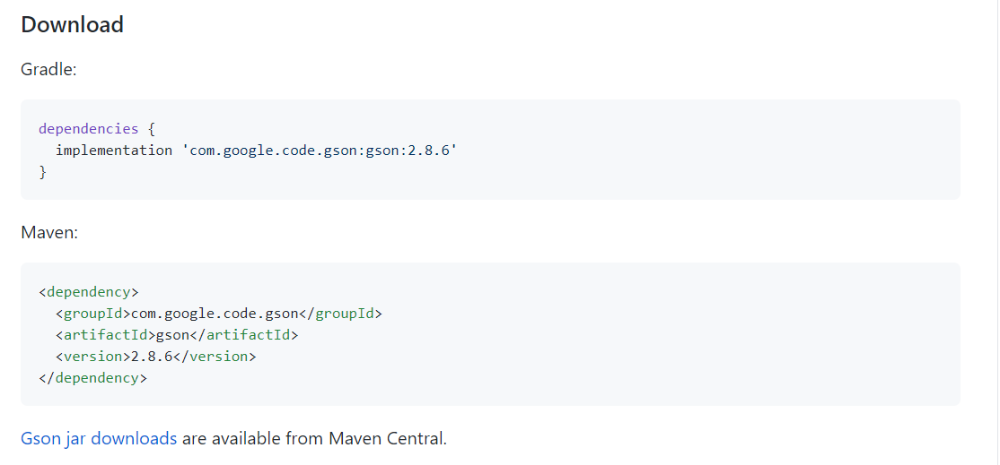
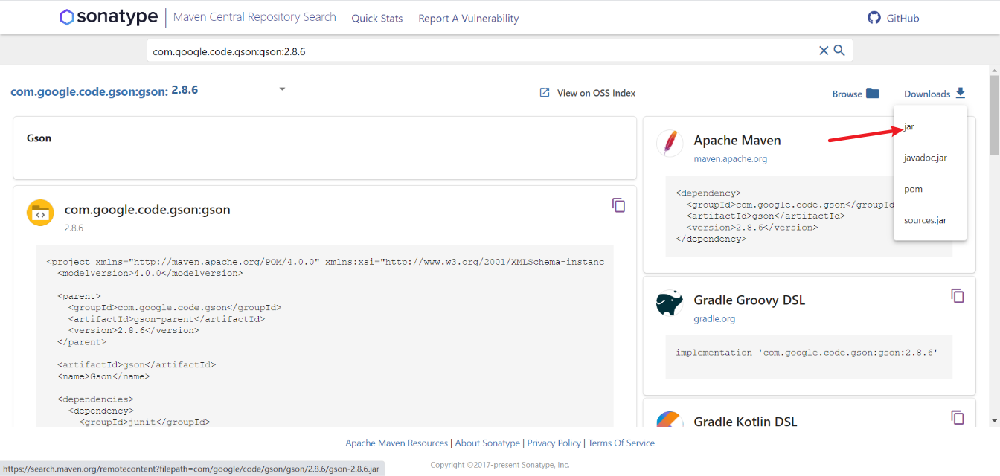
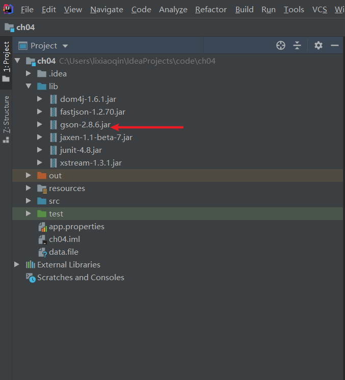
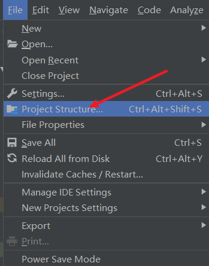
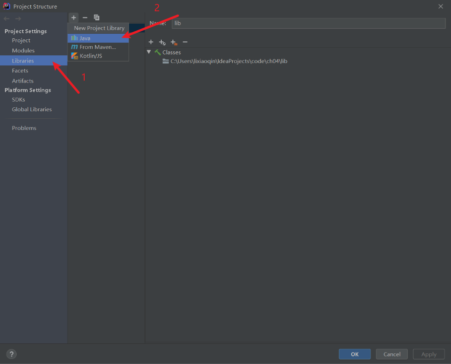
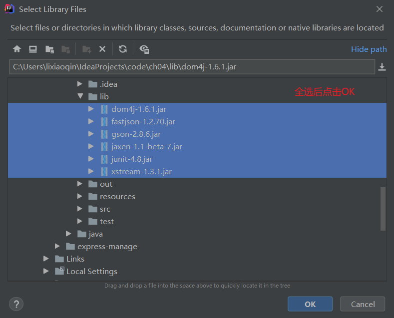
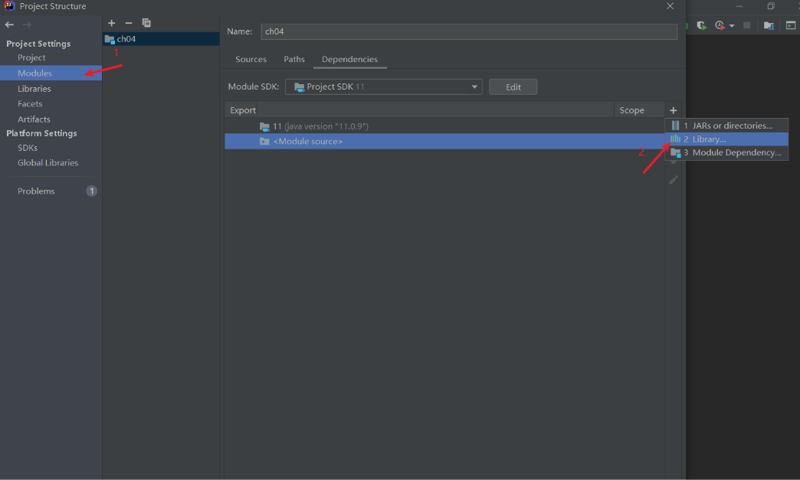
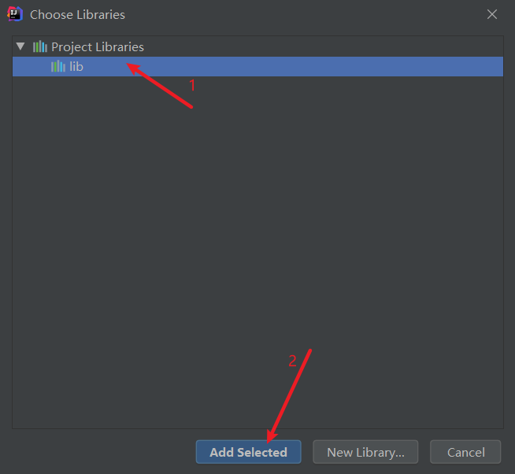
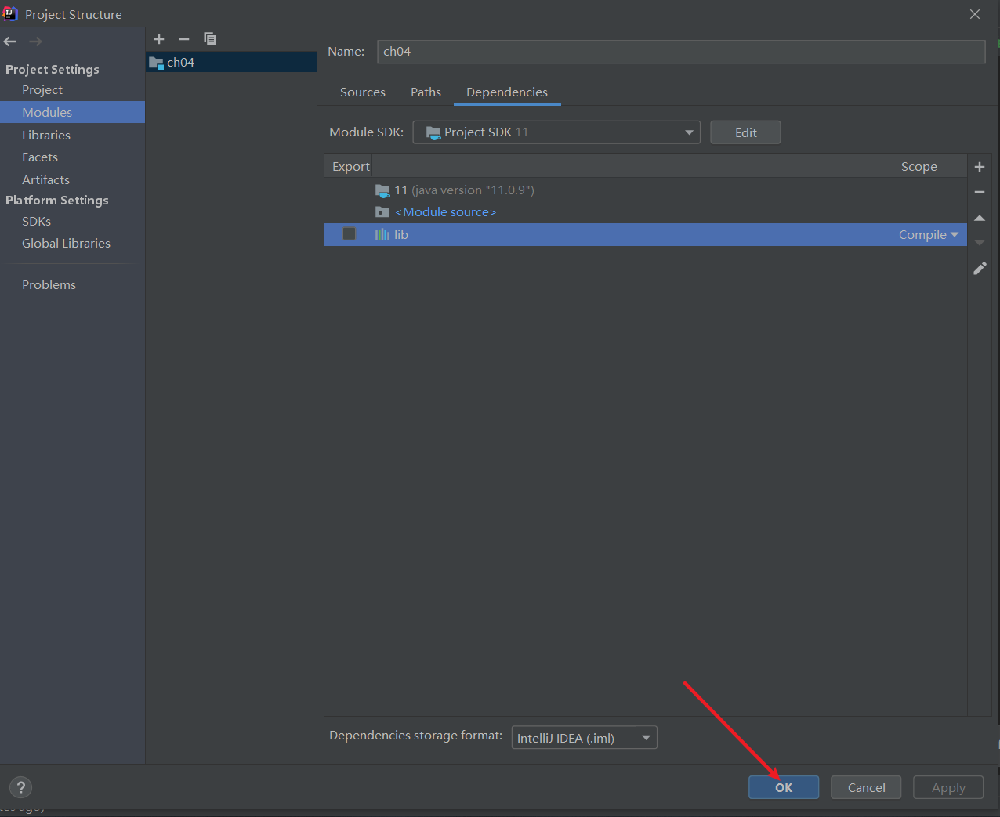

JSON解析
2021-02-08 12:47 字数：2434 标签： Java一、JSON概述
JSON(JavaScriptObject Notation, JS 对象简谱) 是一种轻量级的数据交换格式。它基于 ECMAScript (欧洲计算机协会制定的js规范)的一个子集，采用完全独立于编程语言的文本格式来存储和表示数据。简洁和清晰的层次结构使得 JSON 成为理想的数据交换语言。 易于人阅读和编写，同时也易于机器解析和生成，并有效地提升网络传输效率。已经替代了过去使用的XML，作为流行的数据传输格式。
二、语法
实例：
{
"name": "约翰克里斯托夫",
"info": "德国批判主义音乐家的一生",
"price": 102
}
一对{}表示一个对象，对象里面可以有很多属性，用键值对表示。键必须是用""包围的字符串，值可以是字符串、对象、数字、布尔值（true/false）、null和数组。
一对[]表示一个数组，里面可以包含任何类型，比如字符串、数字、对象、布尔值、null，还可以内嵌一个数组，它们之间用,分开就可以了，例如：
["a", 1, { "name":"zhangsan", "age":18 }, [3, true, null, 3.14]]
特殊地，单独的数组、数字、字符串都是合法的。例如：
["佳得乐", "可乐", "尖叫"]
3.14
3
true
"hello json"
三、解析
Java由于官方没有提供解析JSON的类库，但有两个知名的第三方库，Gson和Fastjson。Gson 是 Google 提供的用来在 Java 对象和 JSON 数据之间进行映射的 Java 类库。Fastjson 是一个性能很好的 Java 语言实现的 JSON 解析器和生成器，来自阿里巴巴的工程师开发。
Gson的使用
- 根据Gson的github地址https://github.com/google/gson/，下载jar包并导入到自己的项目中。

点击Gson jar downloads进入下一个页面

点击Downloads>jar下载。
- 导入IDEA
在项目的根目录添加新文件夹lib，把包添加到这里。如下一系列图所示：




如果模块有你导入的模块，可以忽略这一步，没有如下进行：



- 使用Gson
gson有两个常用的方法，解析json的fromJson方法，生成json的toJson方法。
用法示例：
定义JSON解析和生成会用到的类型：
import java.util.Objects;
/**
* @Author: lixiaoqin
* @Description:
* @Date Created in 2021-02 23:56
* @Modified By:
*/
public class Book {
private String id;
private String name;
private String info;
@Override
public String toString() {
return "Book{" +
"id='" + id + '\'' +
", name='" + name + '\'' +
", info='" + info + '\'' +
'}';
}
public Book(String id, String name, String info) {
this.id = id;
this.name = name;
this.info = info;
}
public Book() {
}
public String getId() {
return id;
}
public void setId(String id) {
this.id = id;
}
public String getName() {
return name;
}
public void setName(String name) {
this.name = name;
}
public String getInfo() {
return info;
}
public void setInfo(String info) {
this.info = info;
}
@Override
public boolean equals(Object o) {
if (this == o) return true;
if (o == null || getClass() != o.getClass()) return false;
Book book = (Book) o;
return id.equals(book.id) &&
name.equals(book.name) &&
info.equals(book.info);
}
@Override
public int hashCode() {
return Objects.hash(id, name, info);
}
}
解析json，生成对象
import com.google.gson.Gson;
import java.util.HashMap;
/**
* @Author: lixiaoqin
* @Description:
* @Date Created in 2021-02 23:54
* @Modified By:
*/
public class ResolveJSONByGson {
public static void main(String[] args) {
Gson g = new Gson();
// {"id":"1001","info":"德国批判主义音乐家的一生","name":"约翰克里斯托弗"}
// {"drink": ["佳得乐", "可乐", "尖叫"]}
Book book = g.fromJson("{\"id\":\"1001\",\"info\":\"德国批判主义音乐家的一生\",\"name\":\"约翰克里斯托弗\"}", Book.class);
System.out.println(book.getId());
HashMap hashMap = g.fromJson("{\"drink\": [\"佳得乐\", \"可乐\", \"尖叫\"]}", HashMap.class);
System.out.println(hashMap.get("drink").getClass());
}
}
输出：
1001
class java.util.ArrayList
生成json
import com.google.gson.Gson;
/**
* @Author: lixiaoqin
* @Description:
* @Date Created in 2021-02 23:52
* @Modified By:
*/
public class CreateSJONByGson {
public static void main(String[] args) {
Book book = new Book("1001", "约翰克里斯托弗", "德国批判主义音乐家的一生");
Gson g = new Gson();
String json = g.toJson(book);
System.out.println(json);
}
}
输出：
{"id":"1001","name":"约翰克里斯托弗","info":"德国批判主义音乐家的一生"}
Fastjson的使用
Fastjson的用法与Gson类似，下载和导包如上所述，这里就不过多赘述。
解析json
import com.alibaba.fastjson.JSON;
import java.util.List;
/**
* @Author: lixiaoqin
* @Description:
* @Date Created in 2021-02 23:54
* @Modified By:
*/
public class ResolveJSONByFastJson {
public static void main(String[] args) {
// {"id":"1001","info":"德国批判主义音乐家的一生","name":"约翰克里斯托弗"}
// {"drink": ["佳得乐", "可乐", "尖叫"]}
Book book = JSON.parseObject("{\"id\":\"1001\",\"info\":\"德国批判主义音乐家的一生\",\"name\":\"约翰克里斯托弗\"}", Book.class);
System.out.println(book.getId());
List<String> strings = JSON.parseArray("[\"佳得乐\", \"可乐\", \"尖叫\"]", String.class);
System.out.println(strings);
}
}
输出：
1001
[佳得乐, 可乐, 尖叫]
Gson和Fastjson一样解析json数组生成的是java的ArrayList对象。
生成json
import com.alibaba.fastjson.JSON;
/**
* @Author: lixiaoqin
* @Description:
* @Date Created in 2021-02 23:53
* @Modified By:
*/
public class CreateJSONByFastJson {
public static void main(String[] args) {
Book book = new Book("1001", "约翰克里斯托弗", "德国批判主义音乐家的一生");
String json = JSON.toJSONString(book);
System.out.println(json);
}
}
输出：
{"id":"1001","info":"德国批判主义音乐家的一生","name":"约翰克里斯托弗"}